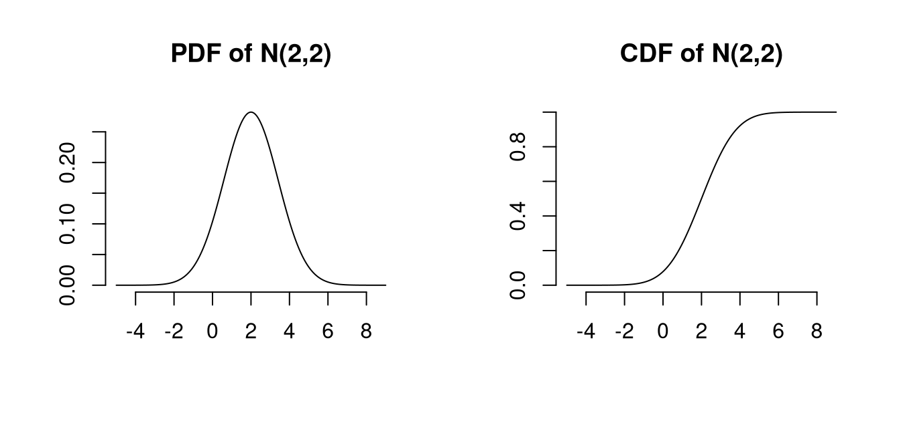
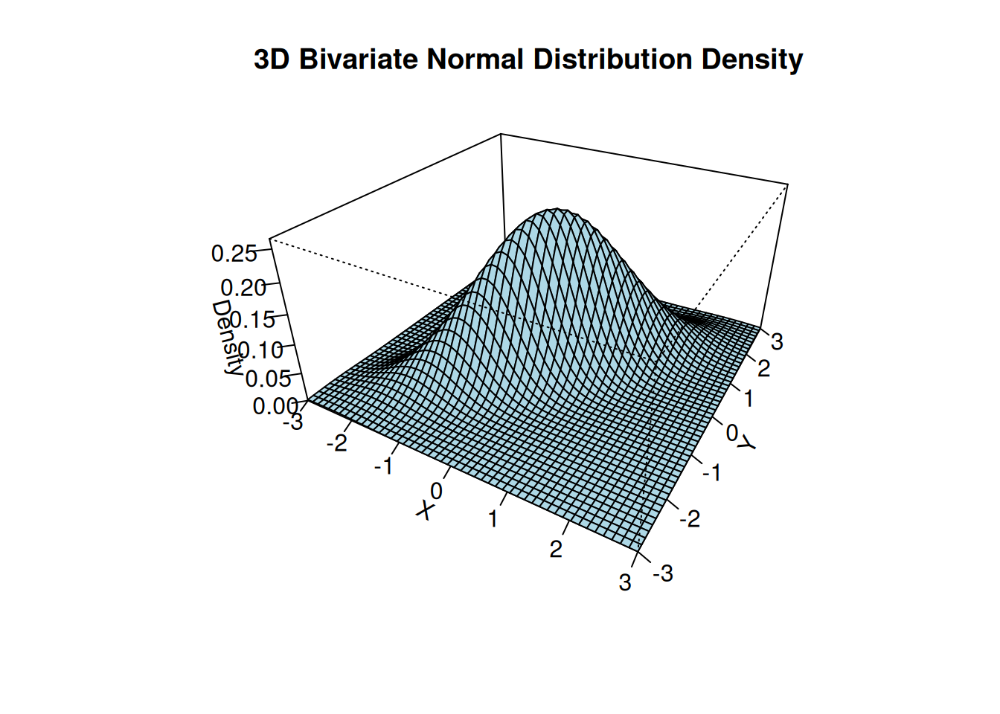
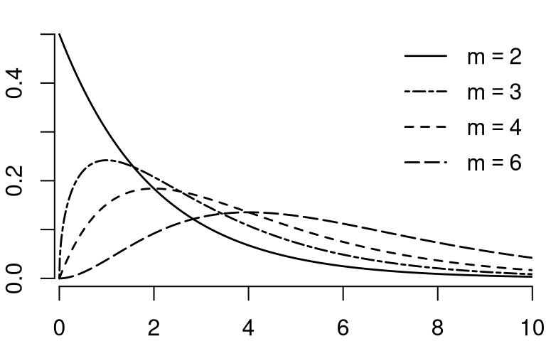
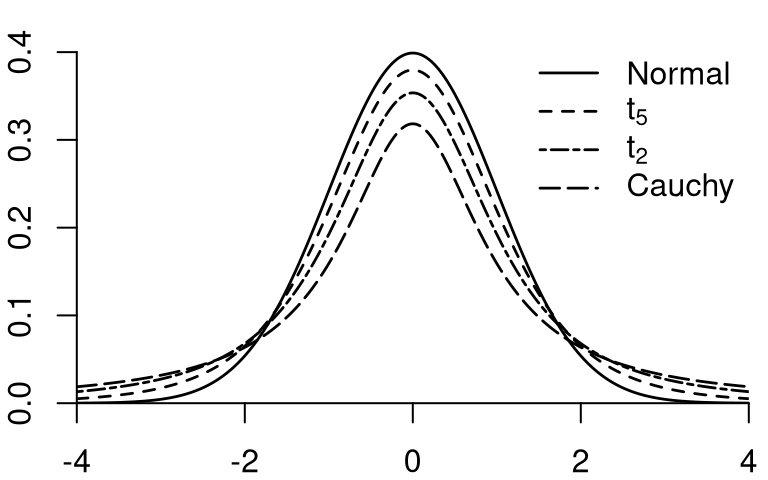
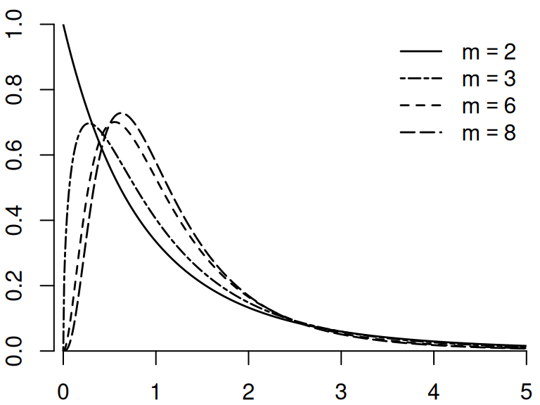

4 Stochastic Convergence
Building on the concepts of the previous sections, we now turn to stochastic convergence which helps us understand the behavior of estimators as sample sizes increase. Stochastic convergence provides the theoretical framework for understanding if and how our estimates approach the true population parameters, which is essential for conducting valid statistical inference in econometric analysis.
4.1 Estimation
Parameter and Estimator
A parameter \theta is a characteristic or feature of a population distribution. Parameters are typically fixed but unknown quantities that we aim to learn about through sampling and estimation.
An estimator \widehat{\theta} is a function of sample data intended to approximate the unknown parameter \theta. Since an estimator is a function of random variables (the sample), it is itself a random variable. When we actually compute the estimator from a specific realized sample, we call the resulting value an estimate.
Examples of parameters include:
- The mean (expected value) \mu of a population distribution
- The variance \sigma^2 of a population distribution
- The coefficients \boldsymbol{\beta} in a regression model
- The correlation \rho between two random variables
For example, the sample mean \overline{Y} = \frac{1}{n}\sum_{i=1}^n Y_i is an estimator for the population mean \mu = E[Y].
When we consider the properties of estimators, we often examine what happens as the sample size increases. This leads us to study sequences of random variables.
A sequence of random variables \{W_n\}_{n=1}^{\infty} is an ordered collection of random variables indexed by sample size n. For estimators, we are interested in how the sequence \{\widehat{\theta}_n\}_{n=1}^{\infty} behaves as n increases, where \widehat{\theta}_n represents the estimator based on a sample of size n.
The behavior of such sequences as n \to \infty is the focus of asymptotic theory in econometrics. Understanding this behavior allows us to evaluate the properties of estimators in large samples, even when their exact finite-sample distributions are intractable.
4.2 Convergence in Probability
Convergence in Probability
A sequence of random variables \{W_n\}_{n=1}^{\infty} converges in probability to a constant c if, for any \epsilon > 0, \lim_{n \to \infty} P(|W_n - c| > \epsilon) = 0
Equivalently, this can be expressed as: \lim_{n \to \infty} P(|W_n - c| \leq \epsilon) = 1
This is denoted as W_n \overset{p}{\to} c.
Intuitively, convergence in probability means that as the sample size n increases, the probability that W_n deviates from c by more than any fixed positive amount \epsilon becomes arbitrarily small.
For example, if W_n \overset{p}{\to} c, then for any small \epsilon > 0 (say, \epsilon = 0.01), we can make P(|W_n - c| > 0.01) as small as we want by choosing a sufficiently large sample size n. This doesn’t mean that W_n will exactly equal c for large n, but rather that the probability of W_n being close to c approaches 1 as n grows.
4.3 Consistency for a Parameter
Applying the concept of convergence in probability to estimators leads to the important property of consistency.
Good estimators get closer and closer to the true parameter being estimated as the sample size n increases, eventually converging to the true parameter value in a hypothetically infinitely large sample.
Consistency
An estimator \widehat{\theta}_n is consistent for the parameter \theta if: \widehat{\theta}_n \overset{p}{\to} \theta \quad \text{as} \quad n \to \infty
That is, if for any \epsilon > 0: \lim_{n \to \infty} P(|\widehat{\theta}_n - \theta| > \epsilon) = 0
Consistency is a minimal requirement for a good estimator. It ensures that with a large enough sample, the estimator will be arbitrarily close to the true parameter with high probability.
If an estimator \widehat{\theta} is a continuous random variable, it will almost never equal exactly the true parameter value because for continuous distributions, point probabilities are zero: P(\widehat{\theta} = \theta) = 0.
However, the larger the sample size, the higher the probability that \widehat{\theta} falls within a small neighborhood around the true value \theta. Consistency means that, if we fix some small precision value \epsilon > 0, then, P(|\widehat{\theta} - \theta| \leq \epsilon) = P(\theta - \epsilon \leq \widehat{\theta} \leq \theta + \epsilon) should increase as the sample size n grows, approaching 1 in the limit.
This property aligns with our intuition that more data should lead to better estimates, and is fundamental to establishing the reliability of statistical procedures in large samples.
4.4 Sufficient Condition for Consistency
A powerful approach to establishing consistency relies on examining the mean squared error (MSE) of an estimator and applying Markov’s inequality.
Markov’s Inequality
For any non-negative random variable X and any positive constant a: P(X \geq a) \leq \frac{E[X]}{a}
Markov’s inequality provides an upper bound on the probability that a non-negative random variable exceeds any positive threshold. While this bound may not be tight, it is extremely useful for proving convergence results.
To apply Markov’s inequality to establish consistency, we consider the squared deviation between the estimator and the parameter: \begin{align*} P(|\widehat{\theta}_n - \theta| > \epsilon) &= P((\widehat{\theta}_n - \theta)^2 > \epsilon^2) \\ &\leq \frac{E[(\widehat{\theta}_n - \theta)^2]}{\epsilon^2} \\ &= \frac{MSE(\widehat{\theta}_n)}{\epsilon^2} \end{align*}
where MSE(\widehat{\theta}_n) = E[(\widehat{\theta}_n - \theta)^2] is the mean squared error of \widehat{\theta}_n.
Therefore, if \lim_{n \to \infty} MSE(\widehat{\theta}_n) = 0, then necessarily \lim_{n \to \infty} P(|\widehat{\theta}_n - \theta| > \epsilon) = 0 for any \epsilon > 0.
This leads directly to a sufficient condition for consistency:
Sufficient Condition for Consistency
Let \widehat{\theta}_n be an estimator for parameter \theta. If: \lim_{n \to \infty} MSE(\widehat{\theta}_n) = \lim_{n \to \infty} E[(\widehat{\theta}_n - \theta)^2] = 0
Then \widehat{\theta}_n is consistent for \theta.
This result is particularly valuable because it connects consistency to the MSE, which we can often calculate or bound more easily than working directly with probabilities.
4.5 MSE Decomposition
To analyze when the sufficient condition for consistency holds, we need to understand the components of the MSE. The bias of an estimator is defined as:
Bias(\widehat{\theta}_n) = E[\widehat{\theta}_n] - \theta
The bias measures the systematic deviation of the estimator from the true parameter. An estimator is unbiased if Bias(\widehat{\theta}_n) = 0 for all sample sizes, and asymptotically unbiased if \lim_{n \to \infty} Bias(\widehat{\theta}_n) = 0.
MSE Decomposition
MSE(\widehat{\theta}_n) = Var(\widehat{\theta}_n) + [Bias(\widehat{\theta}_n)]^2
To derive this decomposition, we add and subtract E[\widehat{\theta}_n] inside the squared term:
\begin{align*} MSE(\widehat{\theta}_n) &= E[(\widehat{\theta}_n - \theta)^2] \\ &= E[(\widehat{\theta}_n - E[\widehat{\theta}_n] + E[\widehat{\theta}_n] - \theta)^2] \end{align*}
Expanding the square, we get:
\begin{align*} E[(\widehat{\theta}_n - E[\widehat{\theta}_n])^2 + 2(\widehat{\theta}_n - E[\widehat{\theta}_n])(E[\widehat{\theta}_n] - \theta) + (E[\widehat{\theta}_n] - \theta)^2] \end{align*}
The first term is the variance of \widehat{\theta}_n. The third term is the squared bias. The middle term simplifies to zero because E[\widehat{\theta}_n - E[\widehat{\theta}_n]] = 0.
This decomposition shows that the estimation error comes from two sources: the variability of the estimator around its expected value (variance) and the systematic deviation of the expected value from the true parameter (bias).
This leads to a practical sufficient condition for consistency:
Practical Sufficient Condition for Consistency
An estimator \widehat{\theta}_n is consistent for \theta if both of the following conditions hold as n \to \infty:
- Bias(\widehat{\theta}_n) \to 0 (asymptotically unbiased)
- Var(\widehat{\theta}_n) \to 0 (variance approaches zero)
4.6 Law of Large Numbers
The Law of Large Numbers (LLN) is one of the fundamental results in probability theory that establishes the consistency of the sample mean. We can prove this important result by applying the sufficient condition for consistency.
Consider an i.i.d. sample \{Y_1, Y_2, \ldots, Y_n\} with E[Y_i] = \mu and Var(Y_i) = \sigma^2 < \infty. For the sample mean \overline{Y}_n = \frac{1}{n}\sum_{i=1}^n Y_i, we can verify:
E[\overline{Y}_n] = E\left[\frac{1}{n}\sum_{i=1}^n Y_i\right] = \frac{1}{n}\sum_{i=1}^n E[Y_i] = \frac{1}{n} \cdot n \cdot \mu = \mu, so Bias[\overline{Y}_n] = 0 for all n
Var[\overline{Y}_n] = Var\left[\frac{1}{n}\sum_{i=1}^n Y_i\right] = \frac{1}{n^2}\sum_{i=1}^n Var[Y_i] = \frac{n\sigma^2}{n^2} = \frac{\sigma^2}{n} \to 0 as n \to \infty
Therefore, MSE(\overline{Y}_n) = Var(\overline{Y}_n) + [Bias(\overline{Y}_n)]^2 = \frac{\sigma^2}{n} + 0 \to 0 as n \to \infty.
Since the MSE approaches zero, by the sufficient condition for consistency, we conclude that \overline{Y}_n \overset{p}{\to} \mu. This result is formalized as the Law of Large Numbers:
Law of Large Numbers (LLN)
Let \{Y_1, Y_2, \ldots, Y_n\} be a sequence of independent and identically distributed (i.i.d.) random variables with E[Y_i] = \mu and Var(Y_i) = \sigma^2 < \infty. Then:
\overline{Y}_n = \frac{1}{n}\sum_{i=1}^n Y_i \overset{p}{\to} \mu \quad \text{as} \quad n \to \infty
The LLN essentially states that if we take a large enough sample from a population with finite mean, the sample mean will be close to the population mean with high probability.
Below is an interactive Shiny app to visualize the law of large numbers using simulated data for different sample sizes and different distributions.
The LLN extends to functions of sample means as well. If g(\cdot) is a continuous function and \overline{Y}_n \overset{p}{\to} \mu, then:
g(\overline{Y}_n) \overset{p}{\to} g(\mu)
This result, known as the continuous mapping theorem, allows us to establish consistency for a wide range of estimators that can be expressed as functions of sample means.
4.7 Rate of Convergence
While consistency tells us that an estimator eventually converges to the true parameter, it doesn’t indicate how quickly this convergence occurs. The rate of convergence provides this information.
We already learned that the MSE for the sample mean is MSE(\overline{Y}) = \frac{\sigma^2}{n}, where 0 < Var[Y] = \sigma^2 < \infty.
A quantity with better interpretability than the MSE is its square root, similar to the relationship between variance and standard deviation.
The root mean squared error (RMSE) of an estimator \widehat{\theta} for \theta is RMSE(\widehat{\theta}) = \sqrt{MSE(\widehat{\theta})} = \sqrt{E[(\widehat{\theta} - \theta)^2]}.
The RMSE measures how much an estimate differs on average from its true parameter value for a given sample size n.
The RMSE of the sample mean is RMSE(\overline{Y}) = \frac{\sigma}{\sqrt{n}}.
Since the RMSE is proportional to 1/\sqrt{n}, we say that the sample mean has the rate of convergence \sqrt{n}. We have \lim_{n \to \infty} \sqrt{n} \cdot RMSE(\overline{Y}) = \sigma.
Rate of Convergence
An estimator \widehat{\theta} with \lim_{n \to \infty} MSE(\widehat{\theta}) = 0 has convergence rate \sqrt{n} if 0 < \lim_{n \to \infty} \Big( \sqrt{n} \cdot RMSE(\widehat{\theta}) \Big) < \infty
More generally, the rate of convergence is r_n if 0 < \lim_{n \to \infty} \Big( r_n \cdot RMSE(\widehat{\theta}) \Big) < \infty.
The rate \sqrt{n} is the standard convergence rate for estimators and valid for most estimators we use in practice under mild conditions. If the rate of convergence is \sqrt{n}, we say that the estimator has a parametric convergence rate. There are exceptions where estimators have slower or faster convergence rates (nonparametric estimators, bootstrap, cointegration, long-memory time series).
The rate of convergence gives a first indication of how fast the uncertainty decreases as we get more observations.
Consider the case of a \sqrt{n} rate as in the sample mean case:
- To halve the average deviation of the estimate from the true parameter value, we need to increase the sample size by a factor of 4 since \sqrt{4}=2.
- To reduce the RMSE by a factor of 4, we already need to increase the sample size by a factor of 16.
Thus, to achieve substantially smaller error margins, researchers must gather disproportionately larger samples.
4.8 Convergence in Distribution
Convergence in Distribution
A sequence of random variables \{W_n\}_{n=1}^{\infty} converges in distribution to a random variable W if: \lim_{n \to \infty} F_{n}(x) = F(x) for all points x where F(x) is continuous. Here, F_{n} and F are the cumulative distribution functions of W_n and W, respectively.
This is denoted as W_n \overset{d}{\to} W.
Unlike convergence in probability, which relates a sequence of random variables to a fixed constant, convergence in distribution relates the sequence to another random variable with a specific distribution.
If an estimator \widehat{\theta}_n is consistent for \theta, then: \widehat{\theta}_n \overset{p}{\to} \theta
This implies that \widehat{\theta}_n also converges in distribution to the constant \theta: \widehat{\theta}_n \overset{d}{\to} \theta
However, this limiting distribution is degenerate, meaning it places all probability mass at the single point \theta. A degenerate distribution at a point c satisfies P(W=c)=1. Consequently, even though we write \widehat{\theta}_n \overset{d}{\to} \theta, this tells us nothing about the shape of the sampling distribution for finite n; it simply confirms that \widehat{\theta}_n converges to \theta in the limit.
4.9 Asymptotic Distribution of an Estimator
To obtain a non-degenerate limiting distribution that provides useful information about the sampling variability of a consistent estimator, we typically examine a standardized version of the estimator.
If \widehat{\theta}_n converges to \theta at rate r_n, then we study: r_n(\widehat{\theta}_n - \theta)
For many estimators with r_n = \sqrt{n}, this standardized quantity converges in distribution to a normal random variable: \sqrt{n}(\widehat{\theta}_n - \theta) \overset{d}{\to} \mathcal{N}(0, V) where V is the asymptotic variance.
The distribution of \sqrt{n}(\widehat{\theta}_n - \theta) is called the asymptotic distribution of the estimator \widehat{\theta}_n. For large n, we can approximate: \widehat{\theta}_n \approx \mathcal{N}\left(\theta, \frac{V}{n}\right)
This approximation is the basis for constructing confidence intervals and conducting hypothesis tests in large samples.
4.10 Central Limit Theorem
The Central Limit Theorem (CLT) is the key result that establishes the asymptotic normality of many estimators.
Central Limit Theorem (CLT)
Let \{Y_1, Y_2, \ldots, Y_n\} be a sequence of i.i.d. random variables with mean \mu and variance \sigma^2 < \infty. Then: \sqrt{n}(\overline{Y}_n - \mu) \overset{d}{\to} \mathcal{N}(0, \sigma^2)
Or equivalently: \frac{\overline{Y}_n - \mu}{\sigma/\sqrt{n}} \overset{d}{\to} \mathcal{N}(0, 1)
The CLT tells us that the standardized sample mean follows a standard normal distribution in large samples, regardless of the underlying distribution of the individual observations (as long as the variance is finite).
This remarkable result means that we can construct approximate confidence intervals and conduct hypothesis tests for the mean using the normal distribution, even when the population distribution is non-normal, provided the sample size is sufficiently large.
The same result can be extended to k-dimensional random vectors:
Multivariate Central Limit Theorem (MCLT)
If \{\boldsymbol{W}_1, \ldots, \boldsymbol{W}_n\} is an i.i.d. sample of k-dimensional random vectors with E[\boldsymbol{W}_i] = \boldsymbol{\mu} and Var(\boldsymbol{W}_i) = \boldsymbol{\Sigma} < \infty, then: \sqrt{n} \bigg( \frac{1}{n} \sum_{i=1}^n \boldsymbol{W}_i - \boldsymbol{\mu} \bigg) \overset{d}{\to} \mathcal{N}(\boldsymbol{0}, \boldsymbol{\Sigma})
Below, you will find an interactive shiny app for the central limit theorem:
I’ll revise the section to follow more closely the approach in the paste.txt document while maintaining consistency with the previous parts.
4.11 The Normal Distribution
The Gaussian distribution, also known as the normal distribution, is a fundamental concept in statistics and plays a central role in asymptotic theory.
Normal Distribution
A random variable Z follows a normal distribution with mean \mu and variance \sigma^2, denoted Z \sim \mathcal{N}(\mu, \sigma^2), if its probability density function (PDF) is: f(u) = \frac{1}{\sqrt{2\pi\sigma^2}} \exp\left(-\frac{(u-\mu)^2}{2\sigma^2}\right)
The key moments of the normal distribution are:
- Mean: E[Z] = \mu
- Variance: Var(Z) = \sigma^2
- Skewness: ske(Z) = 0
- Kurtosis: kur(Z) = 3
The Gaussian distribution with mean 0 and variance 1 is called the standard normal distribution. It has the PDF: \phi(u) = \frac{1}{\sqrt{2\pi}} \exp\left(-\frac{u^2}{2}\right)
and CDF: \Phi(a) = \int_{-\infty}^a \phi(u) \ du
The standard normal distribution is symmetric around zero: \phi(u) = \phi(-u), \quad \Phi(a) = 1 - \Phi(-a)
Standardization: If Z \sim \mathcal{N}(\mu, \sigma^2), then: \frac{Z-\mu}{\sigma} \sim \mathcal{N}(0,1)
and the CDF of Z is \Phi((u-\mu)/\sigma).
Linear combinations: If Y_1, \ldots, Y_n are normally distributed and c_1, \ldots, c_n \in \mathbb{R}, then \sum_{j=1}^n c_j Y_j is normally distributed. In particular, if X_1 \sim \mathcal{N}(\mu_1, \sigma_1^2) and X_2 \sim \mathcal{N}(\mu_2, \sigma_2^2) are independent, then: a X_1 + b X_2 \sim \mathcal{N}(a\mu_1 + b\mu_2, a^2\sigma_1^2 + b^2\sigma_2^2)
4.11.1 Multivariate Normal Distribution
Let Z_1, \ldots, Z_k be independent \mathcal{N}(0,1) random variables. Then, the k-vector \boldsymbol{Z} = (Z_1, \ldots, Z_k)' has the multivariate standard normal distribution, written \boldsymbol{Z} \sim \mathcal{N}(\boldsymbol{0}, \boldsymbol{I}_k). Its joint density is: f(\boldsymbol{u}) = \frac{1}{(2\pi)^{k/2}} \exp\left(-\frac{\boldsymbol{u}'\boldsymbol{u}}{2}\right)
More generally, a random vector \boldsymbol{Z}^* = \boldsymbol{\mu} + \boldsymbol{B}\boldsymbol{Z} (where \boldsymbol{\mu} is a q \times 1 vector and \boldsymbol{B} is a q \times k matrix) has a multivariate normal distribution with mean vector \boldsymbol{\mu} and covariance matrix \boldsymbol{\Sigma} = \boldsymbol{B}\boldsymbol{B}', written \boldsymbol{Z}^* \sim \mathcal{N}(\boldsymbol{\mu}, \boldsymbol{\Sigma}). The k-variate PDF is: f(\boldsymbol{u}) = \frac{1}{(2\pi)^{k/2}(\det(\boldsymbol{\Sigma}))^{1/2}} \exp\left(-\frac{1}{2}(\boldsymbol{u}-\boldsymbol{\mu})'\boldsymbol{\Sigma}^{-1}(\boldsymbol{u}-\boldsymbol{\mu})\right)
The mean vector and covariance matrix are: E[\boldsymbol{Z}^*] = \boldsymbol{\mu}, \quad Var(\boldsymbol{Z}^*) = \boldsymbol{\Sigma}

The 3d plot shows the bivariate normal PDF with parameters \boldsymbol \mu = \begin{pmatrix} 0 \\ 0 \end{pmatrix}, \quad \boldsymbol \Sigma = \begin{pmatrix} 1 & 0.8 \\ 0.8 & 1 \end{pmatrix}.
4.11.2 Chi-squared Distribution
Let Z_1, \ldots, Z_m be independent \mathcal{N}(0,1) random variables. Then, the random variable: Y = \sum_{i=1}^m Z_i^2 is chi-squared distributed with parameter m (degrees of freedom), written Y \sim \chi^2_m.
The key moments are:
- Mean: E[Y] = m
- Variance: Var(Y) = 2m
- Skewness: ske(Y) = \sqrt{8/m}
- Kurtosis: kur(Y) = 3+12/m

4.11.3 Student’s t-Distribution
If Z \sim \mathcal{N}(0,1) and Q \sim \chi^2_m are independent, then: Y = \frac{Z}{\sqrt{Q/m}} is t-distributed with m degrees of freedom, written Y \sim t_m.
The t-distribution with m=1 is also called the Cauchy distribution. The t-distributions with degrees of freedom 1-4 are heavy-tailed distributions. As m \to \infty, the t-distribution approaches the standard normal distribution.
The key moments (when they exist) are: * Mean: E[Y] = 0 if m \geq 2 * Variance: Var(Y) = \frac{m}{m-2} if m \geq 3 * Skewness: ske(Y) = 0 if m \geq 4 * Kurtosis: kur(Y) = 3+\frac{6}{m-4} if m \geq 5
For smaller values of m, certain moments do not exist: the kurtosis is infinite for m \leq 4, the skewness is undefined for m \leq 3, the variance is infinite for m \leq 2, and the mean is undefined for m=1.

4.11.4 F-Distribution
If Q_1 \sim \chi^2_m and Q_2 \sim \chi^2_r, and if Q_1 and Q_2 are independent, then: Y = \frac{Q_1/m}{Q_2/r} is F-distributed with parameters m and r, written Y \sim F_{m,r}.
The parameter m is called the degrees of freedom in the numerator; r is the degree of freedom in the denominator. If r \to \infty, then the distribution of mY approaches \chi^2_m.
